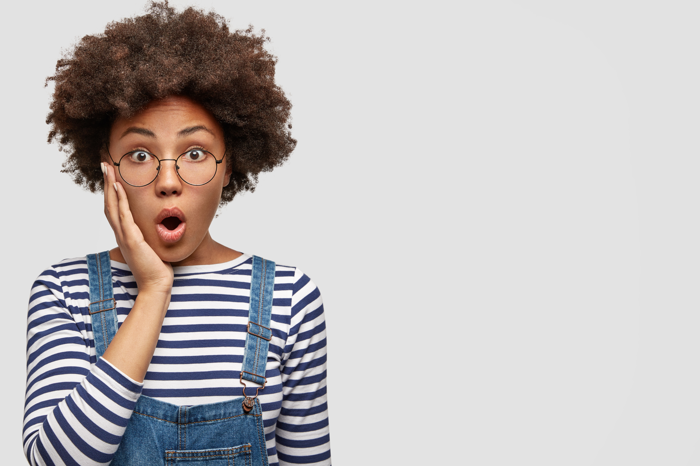

Nous aidons la gent féminine à s'épanouir émotionnellement et à cultiver des relations positives avec son environnement.
Nous sommes une communauté passionnée et engagée qui s'efforce de briser les stigmates entourant la santé mentale féminine. Notre mission est d'éduquer, de soutenir et de créer un espace sûr où les femmes peuvent partager leurs expériences et trouver la compréhension et l'empathie dont elles ont besoin.
Fondée par un groupe de professionnelles de la santé mentale, d'activistes et de femmes inspirées, notre association est animée par le désir de mettre en lumière les défis uniques auxquels les femmes sont confrontées en matière de santé mentale. Nous croyons en la force collective du partage d'histoires, en l'éducation et en l'action pour promouvoir le bien-être émotionnel.
La mission de notre association est de briser les stigmates entourant la santé mentale et de promouvoir une compréhension empathique au sein de la société. À travers des campagnes de sensibilisation, des événements éducatifs et des plateformes en ligne, nous visons à créer un environnement où les discussions ouvertes sur la santé mentale sont encouragées, où l'accès à des ressources de qualité est facilité, et où le soutien mutuel prospère. Notre engagement se traduit par la prévention, le partage d'histoires de rétablissement, la formation des professionnels et des partenariats communautaires, dans le but ultime de favoriser le bien-être émotionnel et de bâtir une société solidaire et inclusive pour tous.
À travers nos campagnes de sensibilisation, nous visons à créer un changement positif dans la manière dont la société aborde la santé mentale féminine.
Créer et diffuser du contenu engageant sur les médias sociaux pour informer et éduquer le public sur les problèmes de santé mentale, en utilisant des infographies, des vidéos et des témoignages.
Organiser des ateliers en ligne ou en personne qui enseignent des compétences en matière de gestion du stress, de la résilience et de l'estime de soi.
Mettre en place des groupes de discussion en ligne où les individus peuvent se connecter, partager leurs expériences et recevoir du soutien de pairs.
En vue de notre engagement continu pour la santé mentale des femmes, nous prévoyons de mettre en œuvre divers projets tels que des conférences interactives, des ateliers de développement personnel et des ressources en ligne pour offrir un soutien complet et éducatif à toutes les femmes.
Collecter et publier des témoignages de personnes ayant vécu des expériences de santé mentale, créant une bibliothèque de récits pour inspirer et informer.
Développer un programme éducatif complet sur la santé mentale à destination des écoles, comprenant des ateliers, des ressources et des séances de sensibilisation.
Organiser un programme artistique qui encourage les gens à s'exprimer à travers l'art et à utiliser la créativité comme moyen de guérison.
| Mois | Activité | Période |
|---|---|---|
| Janvier 2024 | Sensibilisation et Lancement | 1ère et 2em semaines |
| Février 2024 | Projet Artistique et Soutien en Ligne | 1ère et 2em semaines |
| Mars 2024 | Événements Communautaires et Célébration | 1ère et 2em semaines |
| Avril 2024 | Sensibilisation et Lancement | 1ère et 2em semaines |
| Mai 2024 | Sensibilisation et Lancement | 1ère et 2em semaines |
| Juin 2024 | Sensibilisation et Lancement | 1ère et 2em semaines |
| Juillet 2024 | Sensibilisation et Lancement | 1ère et 2em semaines |
J'ai été profondément touchée par la communauté et les ressources que cette association offre. En tant que femme luttant contre des défis de santé mentale, j'ai trouvé un espace où je me sens entendue et soutenue. Les ateliers en ligne m'ont permis de développer des outils pour gérer mon bien-être émotionnel au quotidien. Les discussions ouvertes et sans jugement avec d'autres membres m'ont montré que je ne suis pas seule dans cette lutte. Je suis reconnaissante pour cette plateforme qui a vraiment fait une différence positive dans ma vie
Asyla, Membre de la communauté.
